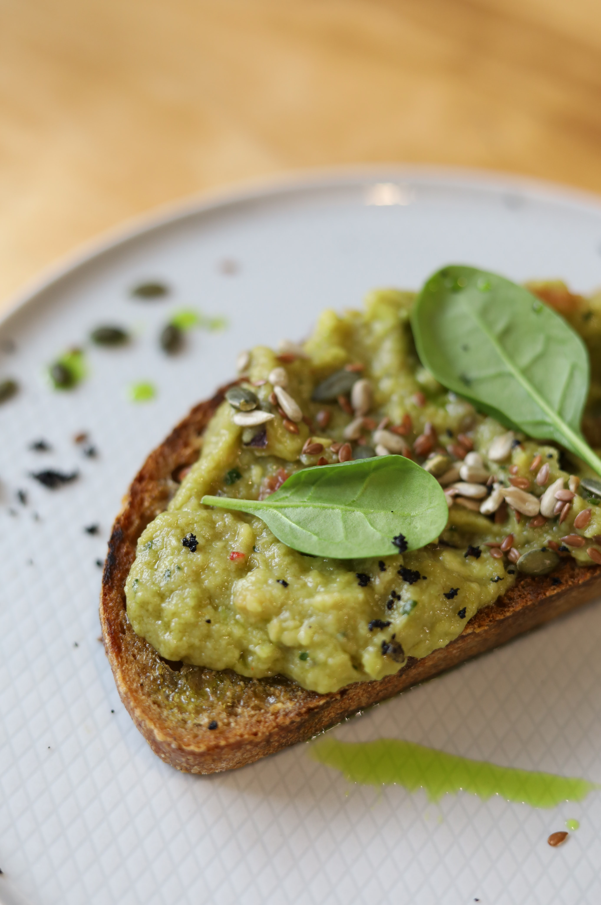

Avocado toast

Description
This quick and easy avocado toast recipe is the perfect 5 minute healthy breakfast, even for those that are not fans of cooking. Avocado toast can be fun, fresh, and with the perfect topping you will never get enough of it.
If you're new to trying avocado or you're well-familiar with the joy of avocado toast, I hope these tips will help you out.
Ingredients
- 1 slice of toasted whole grain bread
- 1 teaspoon of fresh lemon juice
- 1 teaspoon of extra-virgin olive oil
- half of an avocado
- a pinch of salt
- a pinch of black pepper
- mix of seeds and basil for toppings
Steps
- In a bowl combine avocado, lemon juice, salt and pepper.
- Gently mash the avocado with the back of a fork.
- Top the toasted slice of bread with the avocado mixture.
- Drizzle with olive oil, sprinkle the seeds and gently place the basil on top.